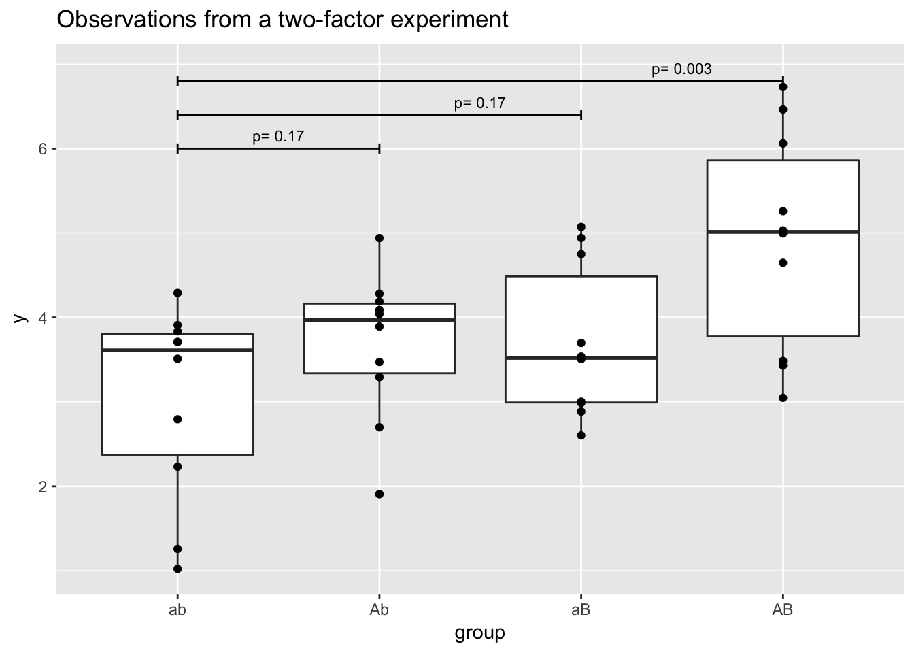
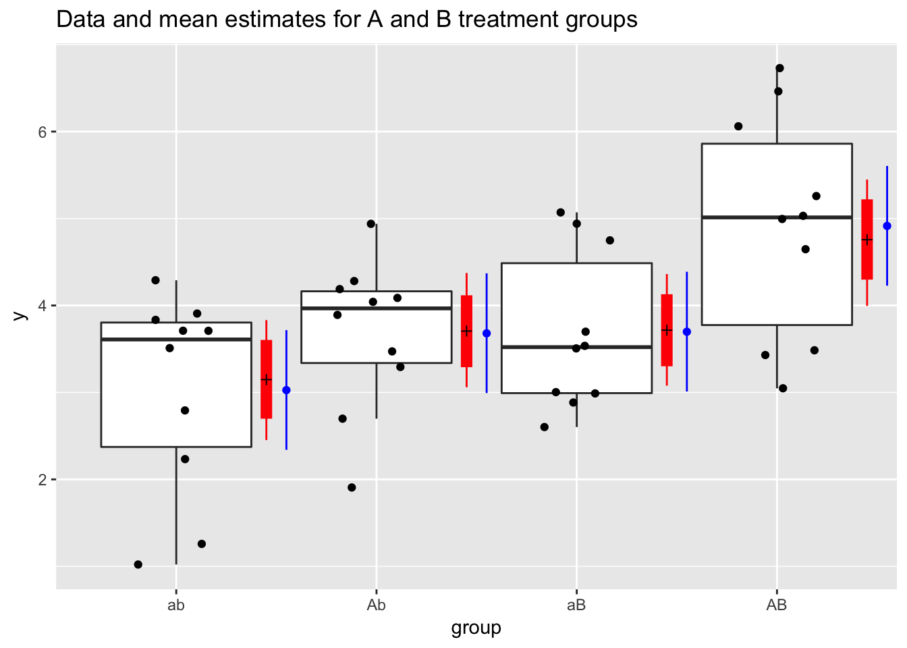
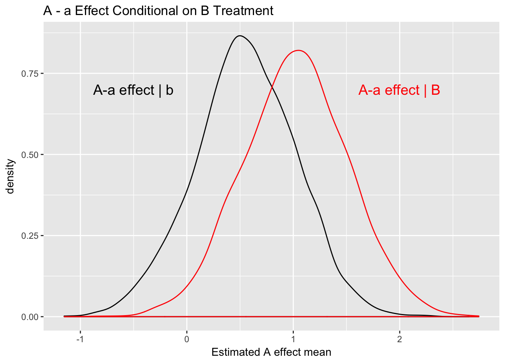
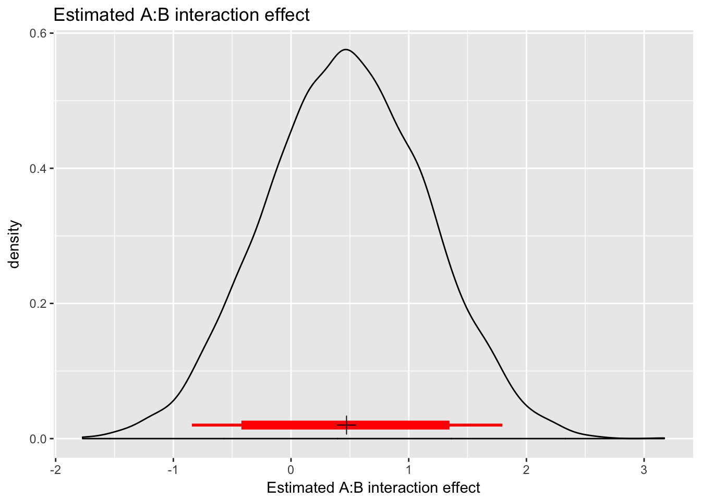

Chapter 1 Introduction - A first example.
Suppose we have a simple experiment with two factors (A/B), each with two levels (aA, bB), conducted in a factorial design with \(n=10\) observations per group. Our general hypothesis is that either factor A or factor B might increase the response, or that both together might be required to create an increase. Let’s consider some data (well, frauda = ‘fraudulent data’), for these four groups (shown below).

1.1 A Scientist’s Analysis
A typical “laboratory” analysis would consider group comparisons using \(t\)-tests.
For ab vs. Ab
Welch Two Sample t-test
data: y[group == "ab"] and y[group == "Ab"]
t = -1.4267, df = 16.739, p-value = 0.1721
alternative hypothesis: true difference in means is not equal to 0
95 percent confidence interval:
-1.6205353 0.3139597
sample estimates:
mean of x mean of y
3.026748 3.680035 For ab vs. aB
Welch Two Sample t-test
data: y[group == "ab"] and y[group == "aB"]
t = -1.443, df = 17.057, p-value = 0.1671
alternative hypothesis: true difference in means is not equal to 0
95 percent confidence interval:
-1.6523020 0.3098862
sample estimates:
mean of x mean of y
3.026748 3.697956 and finally for ab vs. AB
Welch Two Sample t-test
data: y[group == "ab"] and y[group == "AB"]
t = -3.4484, df = 17.79, p-value = 0.002907
alternative hypothesis: true difference in means is not equal to 0
95 percent confidence interval:
-3.0392917 -0.7367985
sample estimates:
mean of x mean of y
3.026748 4.914793 A simple interpretation is that neither A (\(p =\) 0.17) nor B (\(p =\) 0.17) alone produce an increase, but A and B together ‘interact’ to create an increase in \(y\).

Clearly, there are issues here. But note that even if I use a Bonferroni correction for multiple testing, the interaction p-value remains significant (\(p =\) 0.009). I think many lab scientists would not see a huge problem here, and I’m pretty sure this could be published in a good journal.
1.2 More Standard Classical Analysis
A slightly different (better?) analysis considers the groups (and factors) together. This is the standard two-way factorial analysis. “Better” here, depends on your hypotheses. Results are shown in the tables below.
| Df | Sum Sq | Mean Sq | F value | Pr(>F) | |
|---|---|---|---|---|---|
| a.fac | 1 | 8.743 | 8.743 | 7.627 | 0.009 |
| b.fac | 1 | 9.082 | 9.082 | 7.922 | 0.008 |
| a.fac:b.fac | 1 | 0.794 | 0.794 | 0.693 | 0.411 |
| Residuals | 36 | 41.271 | 1.146 | NA | NA |
Call:
lm(formula = y ~ a.fac * b.fac)
Residuals:
Min 1Q Median 3Q Max
-2.00535 -0.73052 0.09802 0.71468 1.81550
Coefficients:
Estimate Std. Error t value Pr(>|t|)
(Intercept) 3.0267 0.3386 8.939 1.14e-10 ***
a.facA 0.6533 0.4788 1.364 0.181
b.facB 0.6712 0.4788 1.402 0.170
a.facA:b.facB 0.5635 0.6772 0.832 0.411
---
Signif. codes: 0 '***' 0.001 '**' 0.01 '*' 0.05 '.' 0.1 ' ' 1
Residual standard error: 1.071 on 36 degrees of freedom
Multiple R-squared: 0.3109, Adjusted R-squared: 0.2535
F-statistic: 5.414 on 3 and 36 DF, p-value: 0.003531The “textbook” interpretation (from a second stats class) is there are significant A and B effects, but no A:B interaction (again, based on p-values). This is the exact opposite of the simple-approach analysis above. WTF! It’s not really fair to blame p-values for this, but their use doesn’t help the situation.
More carefully, the interpretaion can be complicated. If there is truly no interaction, then the A and B main effects are estimated efficiently using all observations, and we can conclude ‘significant A and B main effects’. The SS partitioning does not indicate a strong effect of the interaction. But zero? We know interaction tests often suffer from - low power - awkward interpretation - potential mismatch between scientific and statisitcal hypotheses
If you can’t rule out the interaction (e.g., via an equivalence test or similar), do you want to assume it is zero?
If an interaction is present, then clean estimation of the main effects is difficult. If the interaction is not assumed zero, Classical procedure reverts to pairwise comparisons of groups (and the simple scientist’s analysis is not far off).
Conversely, assuming no interaction is equivalent to accepting the interaction null hypothesis (a classical, knee-jerk no-no). Also, because the A:B interaction is part of the original hypothesis to be evaluated, this assumption seems problematic, or at least philosophically suspect.
Many of the issues here appear to result from a forced dichotomization or conditioning on intermediate results. Is the A:B interaction present or not? Conditional on this answer, we choose a next analysis procedure. Surely the conditional analysis must have an effect on Type I error rate. (It obviously effects Type II errors.)
1.3 Bayesian Hierarchical Modeling
In the Bayesian approach, we compute posterior probabities of unknown quantities (here, means and variances).
Table shows mean and quantile estimates of the group means.
kable(mcmc.parEst, booktabs=TRUE, digits=2,
caption="Group mean estimates and quantiles from Bayesian model")| mean | 2.5% | 10% | 50% | 90% | 97.5% | |
|---|---|---|---|---|---|---|
| ab | 3.15 | 2.47 | 2.71 | 3.15 | 3.59 | 3.82 |
| Ab | 3.70 | 3.06 | 3.29 | 3.69 | 4.12 | 4.32 |
| aB | 3.72 | 3.08 | 3.31 | 3.71 | 4.13 | 4.35 |
| AB | 4.74 | 3.98 | 4.28 | 4.75 | 5.21 | 5.47 |

Figure (fig:newfig} shows that Bayesian estimates ‘borrow’ strength’ across groups and are shrunk toward the overall mean of all groups. In this example, the Bayesian credible intervals are approximately the same length as the classical confidence intervals (about 0.980.980.980.98%). I also show Bayesian 80% posterior credible intervals. In general, these intervals are about 2/3 as long as 95% intervals, but still retain substantial posterior probability for the mean value (4 chances in 5, pretty good, que no?). IMO this narrower interval helps us focus on the quantities we care about.
1.3.1 Estimating the A effect
To estimate the effect of treatment A, let’s check its effect in the absense (b) and presence (B) of treatment B. Figure shows estimated densities (distributions) for the mean difference associated with A when B is absent (black curve), and when B is present (red).
| mean | 2.5% | 10% | 50% | 90% | 97.5% | |
|---|---|---|---|---|---|---|
| A - a w/ b | 0.55 | -0.41 | -0.07 | 0.55 | 1.17 | 1.47 |
| A - a w/ B | 1.02 | 0.05 | 0.38 | 1.03 | 1.65 | 1.99 |

The figure shows that the curves are centered on mean estimates of 0.5, and 1, respectively, indicating (perhaps) a positive effect of A. When B is absent, the probability of no effect (or negative effect) is 0.12 and when B is present is 0.02. Combining curves (marginalizing over B) results in probability 0.07. To me these results suggest some (weakish) evidence of an A effect regardless of the level of B, and somwhat stronger evidence of an A effect in the presence of B.
What, specifically, was the original hypothesis about A and B? This clearly (now) has a bearing on our focus and interpretation.
1.3.2 A:B Interaction
The conditional analysis in the previous subsection doesn’t directly address the A:B interaction. We’ll do that here.

Figure shows a density plot for the estimated interaction effect. The mean estimate is about 0.5, and the 80% interval ranges from about -0.4 to 1.4. Greater uncertainty associated with this effect reduces the evidence of a positive effect. The probability that the effect is zero (or negative) is 0.25.
The Bayesian analysis provides a similar interpretation of results as the factorial classical analysis. But, I think the focus on conditional pairwise comparisons makes it more palatable to non-statistical scientists. Here, the hierarchical modeling is used to address multiple comparisons issues (a la’ Gelman), but is not fundamental to the solution. It’s real benefit is to help us focus on effect sizes and interpretation of scientific hypotheses.
1.4 Fundamental Problem
I think the fundamental problem is with dichotomization of results and conditioning subsequent analyses on this choice. These are not conditional probabilities, but procedure choices that are conditional on earlier stage results.
BTW - what does interaction mean in this problem?